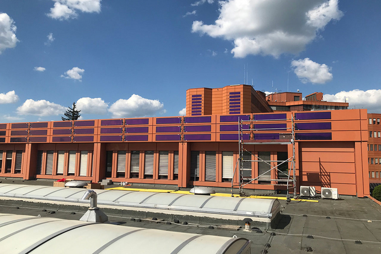
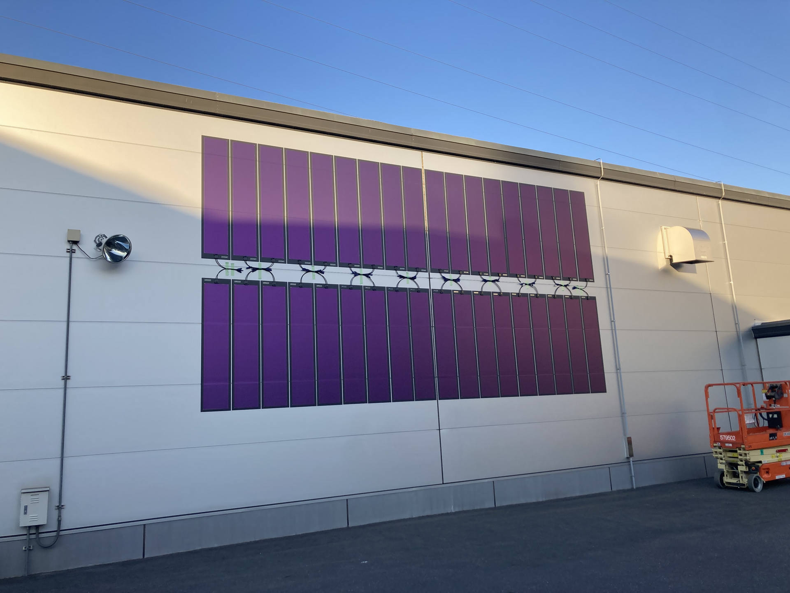
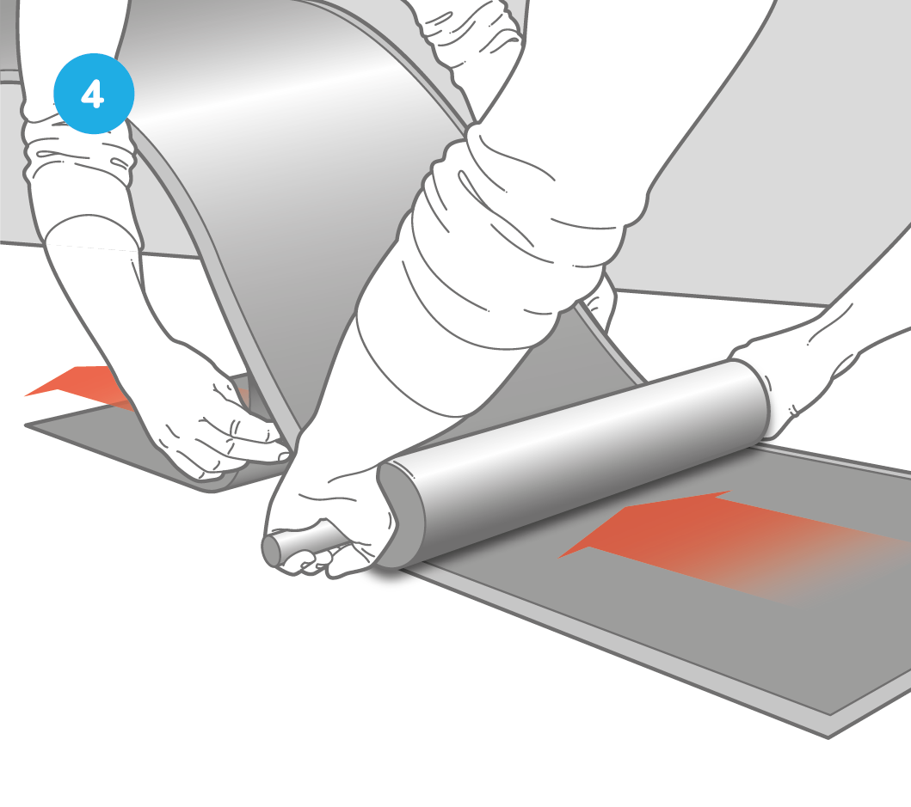
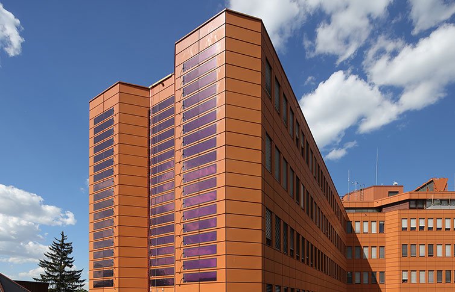
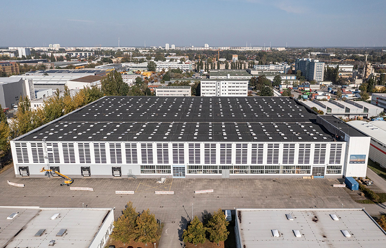
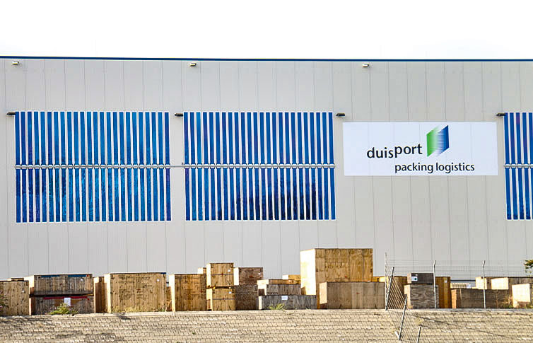
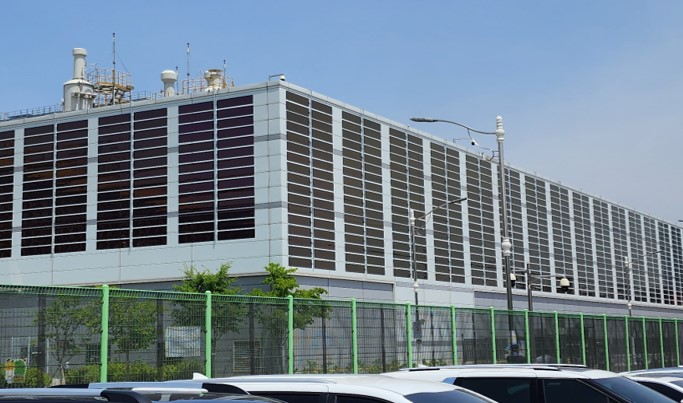

HeliaSol façade film
Organic photovoltaic film (Heliatek HeliaSol 436-2000) with factory adhesive, aimed at Philippine walls and light roofs that cannot take silicon + racking. Photos are Heliatek reference installs (Germany, Japan, Korea), not a local site. No landed ₱/W and no PH distributor letter on disk.
Why it may be a quality opportunity
The bet is not “better panels.” It is power from surface that currently makes zero: warehouse façades, light steel, curved skins. Datasheet (manufacturer): 1.6 kg, 50–55 W, 7.2–8.0% aperture efficiency, +0.00 %/°C from 25–65 °C, design load ±1600 Pa. That is not a typhoon km/h rating.
For
- Under 2 kg/m²-class film; no conventional rails or roof holes
- Façades and weak roofs other EPCs refuse
- IEC 61215 / 61730 claimed (TÜV Rheinland press + product page)
- Hot-skin temperature coefficient is unusually flat on the datasheet
Against
- ~8% vs >20% silicon — about 16 m² per kWp of film area
- Adhesive only as strong as paint/steel underneath
- Typhoon suction at edges/corners needs engineering
- No PH price, no local 10-year wall on disk
How practical
Heliatek requires authorized installers and a clean, dry, load-bearing substrate with 1°–90° slope (user guide). DOE DC2026-08-0017 eases own-use zero-export and ≤1 kW micro-solar — a multi-kW wall is probably a different ERC/DU class. Do not order a container. Ask Heliatek for SE Asia pricing and territory, then run 10–20 films as a tropical torture test.
To take it up
- Write Heliatek for volume ₱ or €/W, tropical warranty, primers in PH.
- Pick one warehouse wall; photograph substrate (paint, rust, slope).
- If a quote exists, install a small instrumented sample set — not a sales façade.
Dossier: directory/ideas/heliasol-facade/idea.md ·
projects/heliasol-facade/brief.md